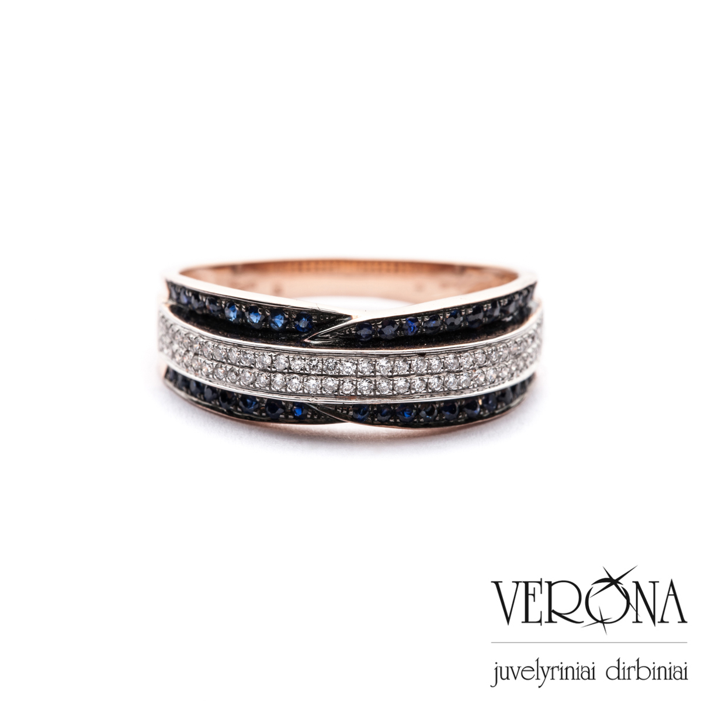

Welcome to žiedai
Sužadėtuvių žiedai, vestuviniai žiedai, brangakmeniai, juvelyrika
2020.10.29 13:03
Prisijungti
Paieška
Susisiekite su mumis +37064322220 0 Prekė Prekės (tuščia)Prekių nėra
Turi būti nustatyta Pristatymas 0,00 € VisoPirkti
Kiekis Viso Krepšelyje yra 0 prekė (-ės). Krepšelyje yra 1 prekė. Prekės viso Viso pristatymas Turi būti nustatyta Viso Visas siūlomas prekes galima apžiūrėti Kaune arba Vilniuje iš anksto susitarus I-VII 8-20 valandomis.+37064322220
Susisiekite Tęsti apsipirkimą Pereiti prie apmokėjimo +37064322220 Meniu Juvelyrika Žiedai Žiedai su deimantais Žiedai su brangakmeniais Sužadėtuvių žiedai Visi žiedai Vestuviniai žiedai Auskarai Auskarai su deimantais Auskarai su brangakmeniais Visi auskarai Pakabukai-grandinėlės Pakabukai su deimantais Pakabukai su brangakmeniais Visi pakabukai Brangakmeniai Spalvoti brangakmeniai Safyrai Rubinai Smaragdai Chromo diopsidai Kvarcai Peridotai Topazai Tanzanitai Akvamarinai Turmalinai Ametistai Deimantai Džentelmenų gidas Apie mus Apie deimantus Kontaktai
"Diamantė" - kur kainos ir kokybės santykis pralenkia Jūsų lūkesčius.
Juvelyrika
Sertifikuoti deimantai Pirkite išsimokėtinai Nemokamas pristatymasLietuvoje ir ES 100% pinigų grąžinimo garantija Sandėlyje esančias prekes
pristatome per 1-4 d.
Visiems gaminiams taikoma iki 55% nuolaida
Pirkti dabar !
Sertifikuoti deimantai Pirkite išsimokėtinai Nemokamas pristatymasLietuvoje ir ES 100% pinigų grąžinimo garantija Sandėlyje esančias prekes
pristatome per 1-4 d.
Brangakmeniai
Pirkti dabar !
Naujai gautos prekės 1 320,00 € 2 200,00 € -40% Yra sandėlyje Nauja Į krepšelįŽiedas su Safyru ir Deimantais
30-ties dienų grąžinimo garantija Mes įsipareigoję užtikrinti, kad būtumėte patenkintas savo pasirinkimu, jeigu Jūsų netenkina įsigytas gaminys, galite grąžinti prekę su nepažeistu sertifikatu per 30 dienų. Dviejų metų garantija Mes tvirtai pasitikime mūsų papuošalų kokybe ir suteikiame dviejų metų garantiją visiems mūsų...
1 320,00 € 2 200,00 € -40% Sumažinta kaina! Yra sandėlyje 378,00 € 630,00 € -40% Yra sandėlyje Nauja Į krepšelįŽiedas su Safyru ir Deimantais
30-ties dienų grąžinimo garantija Mes įsipareigoję užtikrinti, kad būtumėte patenkintas savo pasirinkimu, jeigu Jūsų netenkina įsigytas gaminys, galite grąžinti prekę su nepažeistu sertifikatu per 30 dienų. Dviejų metų garantija Mes tvirtai pasitikime mūsų papuošalų kokybe ir suteikiame dviejų metų garantiją visiems mūsų...
378,00 € 630,00 € -40% Sumažinta kaina! Yra sandėlyje 510,00 € 850,00 € -40% Yra sandėlyje Nauja Į krepšelįŽiedas su Safyru ir Deimantais
30-ties dienų grąžinimo garantija Mes įsipareigoję užtikrinti, kad būtumėte patenkintas savo pasirinkimu, jeigu Jūsų netenkina įsigytas gaminys, galite grąžinti prekę su nepažeistu sertifikatu per 30 dienų. Dviejų metų garantija Mes tvirtai pasitikime mūsų papuošalų kokybe ir suteikiame dviejų metų garantiją visiems mūsų...
510,00 € 850,00 € -40% Sumažinta kaina! Yra sandėlyje 294,00 € 490,00 € -40% Yra sandėlyje Nauja Į krepšelįŽiedas su Ametistu ir Deimantais
30-ties dienų grąžinimo garantija Mes įsipareigoję užtikrinti, kad būtumėte patenkintas savo pasirinkimu, jeigu Jūsų netenkina įsigytas gaminys, galite grąžinti prekę su nepažeistu sertifikatu per 30 dienų. Dviejų metų garantija Mes tvirtai pasitikime mūsų papuošalų kokybe ir suteikiame dviejų metų garantiją visiems mūsų...
294,00 € 490,00 € -40% Sumažinta kaina! Yra sandėlyje 312,00 € 520,00 € -40% Yra sandėlyje Nauja Į krepšelįBalto aukso sužadėtuvių žiedas su Deimantais
30-ties dienų grąžinimo garantija Mes įsipareigoję užtikrinti, kad būtumėte patenkintas savo pasirinkimu, jeigu Jūsų netenkina įsigytas gaminys, galite grąžinti prekę su nepažeistu sertifikatu per 30 dienų. Dviejų metų garantija Mes tvirtai pasitikime mūsų papuošalų kokybe ir suteikiame dviejų metų garantiją visiems mūsų...
312,00 € 520,00 € -40% Sumažinta kaina! Yra sandėlyje 560,00 € Yra sandėlyje Nauja Į krepšelįŽiedas su Rubinu ir Deimantais
30-ties dienų grąžinimo garantija Mes įsipareigoję užtikrinti, kad būtumėte patenkintas savo pasirinkimu, jeigu Jūsų netenkina įsigytas gaminys, galite grąžinti prekę su nepažeistu sertifikatu per 30 dienų. Dviejų metų garantija Mes tvirtai pasitikime mūsų papuošalų kokybe ir suteikiame dviejų metų garantiją visiems mūsų...
560,00 € Yra sandėlyje 510,00 € 850,00 € -40% Yra sandėlyje Nauja Į krepšelįBalto aukso sužadėtuvių žiedas su Deimantu
30-ties dienų grąžinimo garantija Mes įsipareigoję užtikrinti, kad būtumėte patenkintas savo pasirinkimu, jeigu Jūsų netenkina įsigytas gaminys, galite grąžinti prekę su nepažeistu sertifikatu per 30 dienų. Dviejų metų garantija Mes tvirtai pasitikime mūsų papuošalų kokybe ir suteikiame dviejų metų garantiją visiems mūsų...
510,00 € 850,00 € -40% Sumažinta kaina! Yra sandėlyje 570,00 € 950,00 € -40% Yra sandėlyje Nauja Į krepšelįBalto aukso sužadėtuvių žiedas su Deimantu
30-ties dienų grąžinimo garantija Mes įsipareigoję užtikrinti, kad būtumėte patenkintas savo pasirinkimu, jeigu Jūsų netenkina įsigytas gaminys, galite grąžinti prekę su nepažeistu sertifikatu per 30 dienų. Dviejų metų garantija Mes tvirtai pasitikime mūsų papuošalų kokybe ir suteikiame dviejų metų garantiją visiems mūsų...
570,00 € 950,00 € -40% Sumažinta kaina! Yra sandėlyjeSekite mus Facebook'e
Pristatymas
Pristatymas visoje Europoje nemokamas
Susisiekime
+37064322220 | info @d iamante.lt
Rekvizitai
Kęstučio gatvė 68.
Apžiūra iš anksto susitarus
Įmonės kodas 304884492
MB “Diamantē”
Vestuviniai ir sužadėtuvių žiedai
Didelis įvairios produkcijos pasirinkimas ne visada leidžia pakankamai greitai nuspręsti, kokie sprendimai galėtų geriausiai pasiteisinti. Taigi, ir tuomet, jei pirkėjus domina vestuviniai ir sužadėtuvių žiedai , taip pat neretai tenka gerai pasukti galvą, kokios pasirinkimo galimybės galėtų būti pačiomis palankiausiomis. Taigi, į ką vertėtų atsižvelgti?
Žiedo dydis
Tuo atveju, jei žiedas nėra staigmena, būsimi jaunavedžiai gali kartu nuvykti į juvelyrinių gaminių saloną ir pasimatuoti patikusius žiedus. Vis dėlto, jei renkamas sužadėtuvių žiedas, paprastai tai norima išlaikyti paslaptyje, ir ne visada yra žinoma, koks reikalingas žiedo dydis. Tokiais atvejais tenka pasitelkti gudrumą – galima pamatuoti kito mylimosios turimo žiedo dydį, ir tai padės paprasčiau rasti tinkamiausią pasirinkimą (žinoma, svarbu įsitikinti, kad matuojamo žiedo dydis yra tinkamas).
Auksas, sidabras, platina...
Ne visada yra paprasta nuspręsti, iš kokių medžiagų pagaminti vestuviniai ir sužadėtuvių žiedai galėtų geriausiai pasiteisinti, tad ieškant tinkamiausio sprendimo pirmiausia vertėtų pradėti nuo trūkumų. Pavyzdžiui, iš platinos pagaminti žiedai yra brangūs, auksas ir sidabras gali susibraižyti, o volframas ar titanas yra labai atsparus, ir iš šių medžiagų pagamintų žiedų dydis negali būti koreguojamas. Tuo atveju, jei esate alergiški nikeliui, vertėtų atidžiai rinktis balto aukso ir sidabrinius žiedus – įsitikinkite, kad žiedų lydinyje nebuvo naudojamas nikelis.
Žiedo patogumas
Nors kartais norima įsigyti labai ekstravagantiškus ir stilingus žiedus, tačiau labai svarbu tai, kad vestuviniai ir sužadėtuvių žiedai būtų pakankamai patogūs – juk paprastai jie yra mūvimi kiekvieną dieną. Tuo atveju, jei žiedas bus labai masyvus, prie jo priprasti gali būti gana sudėtinga – jis gali kliudyti sveikinantis, ir t.t. Jei lankysitės fizinėje parduotuvėje, kurioje prekiaujama žiedais, tokiu atveju galėsite pasimatuoti patikusius gaminius, ir nuspręsti, ar jie pakankamai patogūs.
Žiedų papuošimai
Gana dažnai pasirenkami sužadėtuvių ir vestuviniai žiedai, kurie puošti įvairiomis akutėmis. Žinoma, tokie žiedai atrodo kur kas estetiškiau, tačiau svarbu įvertinti, kad akučių vietose kaupiasi nešvarumai, taigi, tokių žiedų priežiūra bus sudėtingesnė ir reikalaujanti daugiau laiko. Laikui bėgant akutės gali iškristi, ir tokiu atveju teks kreiptis į juvelyrą.
Žiedų kaina
Nors vestuviniai ir sužadėtuvių žiedai dažniausiai pasirenkami pagal kitus svarbiausius kriterijus, tačiau kaina vertinama taip pat dažnai. Jei esate numatę, kokią pinigų sumą galite skirti žiedų įsigijimui, galite pasidomėti, kokis juvelyrikos gaminius galėtumėte įsigyti už tokią kainą (palanku apsilankyti internetinėse parduotuvėse ir peržiūrėti įvairius pasiūlymus).
Įvertinę šiuos svarbiausius kriterijus išsirinkti tinkamus vestuvinius ar sužadėtuvių žiedus galėsite kur kas paprasčiau. Svarbiausia – neskubėti, nes šie žiedai bus mūvimi tikrai labai ilgą laiką, ir svarbu ne vien tik tai, kad jie išlaikytų savo estetinę vertę, bet taip pat būtų pakankamai patogūs.
Skaityti daugiau
FacebookSekite mus
Kategorijos
Juvelyrika Žiedai Žiedai su deimantais Žiedai su brangakmeniais Sužadėtuvių žiedai Visi žiedai Vestuviniai žiedai Auskarai Auskarai su deimantais Auskarai su brangakmeniais Visi auskarai Pakabukai-grandinėlės Pakabukai su deimantais Pakabukai su brangakmeniais Visi pakabukai Brangakmeniai Spalvoti brangakmeniai Safyrai Rubinai Smaragdai Chromo diopsidai Kvarcai Peridotai Topazai Tanzanitai Akvamarinai Turmalinai Ametistai DeimantaiInformacija
Specialūs pasiūlymai Naujos prekės Perkamiausios Susisiekite su mumis Pristatymo sąlygos Apie musMano paskyra
Mano užsakymai Mano suteiktos nuolaidos Mano adresai Mano asmeninė informacija Mano kuponaiNaujienlaiškiai
Salonų informacija
Diamantė, Kaunas - Kęstučio gatvė 68. Vilnius - Šv. Stepono 7. Apžiūra iš anksto susitarus Susisiekite dabar: +37064322220 El. paštas: info@diamante.lt